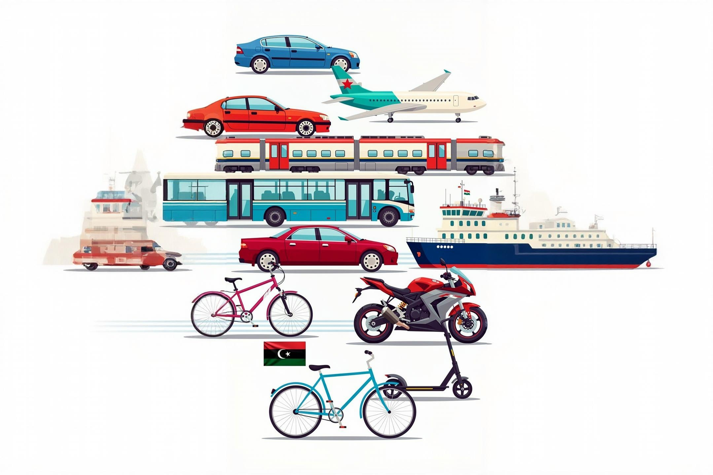

الجغرافيا
الموقع والجغرافيا
تمتد ليبيا عبر شمال أفريقيا بمساحة تزيد عن مليون كيلومتر مربع، مع سواحل خلابة على البحر الأبيض المتوسط وصحاري شاسعة.
اقرأ المزيداستكشف أغنى المحتوى حول ليبيا، ثقافتها، تاريخها، ومعالمها السياحية

تمتد ليبيا عبر شمال أفريقيا بمساحة تزيد عن مليون كيلومتر مربع، مع سواحل خلابة على البحر الأبيض المتوسط وصحاري شاسعة.
اقرأ المزيد
شهدت ليبيا حضارات عريقة: الفينيقيون والرومان والبيزنطيون، تلاها الفتح الإسلامي والعهد العثماني.
اقرأ المزيد
تجمع الثقافة الليبية بين التقاليد العربية والأمازيغية والإسلامية، مع تأثيرات متوسطية وصحراوية غنية.
اقرأ المزيد
تضم ليبيا مواقع أثرية عالمية مثل لبدة الكبرى وصبراتة وغدامس القديمة، إضافة إلى سواحل رملية خلابة.
اقرأ المزيد
يمتد ساحل ليبيا على البحر الأبيض المتوسط بطول 1770 كيلومتر، ويتمتع بمناخ متوسطي ساحلي وصحراوي داخلي.
اقرأ المزيد
تتميز المطبخ الليبي بتنوعه وثرائه، مع أطباق عريقة مثل الكسكسي والشرقوقة والمرق اللذيذة التي تعكس التراث العريق.
اقرأ المزيد
نقطة تحول في تاريخ الدولة الرومانية بأفريقيا، معركة عسكرية حاسمة دارت في مدينة لبدة القديمة وأثرت على مسار التاريخ.
اقرأ المزيد
من طرابلس الحاضرة إلى بنغازي العريقة، تعرف على المدن الرئيسية وروحها المميزة وما تقدمه للزوار.
اقرأ المزيد
اكتشف مجموعة متنوعة من الفنادق الفاخرة والمريحة التي توفر تجربة إقامة لا تنسى في أنحاء ليبيا.
اقرأ المزيد
تعرف على أهم المواقع الأثرية والمعالم التاريخية التي تعكس عظمة الحضارات القديمة في ليبيا.
اقرأ المزيد
استمتع برحلة طهي لا تنسى مع أفضل المطاعم الليبية التقليدية والحديثة في أنحاء البلاد.
اقرأ المزيد
تعرف على أفضل الطرق والخيارات المتاحة للتنقل والسفر بين المدن والمناطق المختلفة في ليبيا.
اقرأ المزيد
اكتشف المتاحف الرئيسية وما تحتويه من مقتنيات أثرية وتراثية تعكس غنى الحضارة الليبية.
اقرأ المزيد